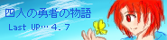

星空の奇跡色。…空の星が照らすのは魔法のような一つの奇跡…
ようこそお越し下さいました。初めての方はAboutのご一読をお願いします。
少しでも楽しんでいただけたら幸いです＾＾*
＊ LAST UPdate ９．２８ …Pict Link＊ 過去の更新
お待たせしました、２周年記念フリーイラストようやく完成です！＊
→こちらからどうぞ！
星空の奇跡色。…空の星が照らすのは魔法のような一つの奇跡…
ようこそお越し下さいました。初めての方はAboutのご一読をお願いします。
少しでも楽しんでいただけたら幸いです＾＾*

＊ LAST UPdate ９．２８ …Pict Link＊ 過去の更新
お待たせしました、２周年記念フリーイラストようやく完成です！＊
→こちらからどうぞ！


もはやメインコンテンツ化。半オリジナル小説です。
ペパマリの千年前の伝説を小説化してます。
| * ――――――――― * ――――――――― * 管理人落書き帳 /一番星のウタ（オフ友交換日記） |
| 其処は 蒼い闇に星が宿る場所 叶う願いも叶わぬ願いも、全て 抱きしめて貰える優しい丘 さあ、一晩の夢を 悲しい瞳をした貴方を呼ぼう 足を止める 振り返る 大切な名前を、紡ぐ 貴方の笑顔が 流れ星のように そっと訪れてくれますように |
今回のＴＯＰ絵→四勇者よりクリスケ擬人化